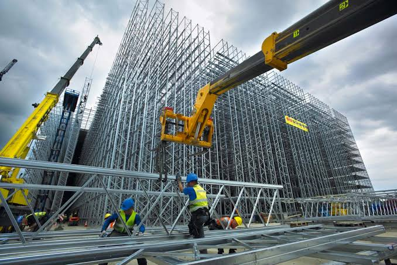

Fasilitas industri perlu mendukung proses kerja yang aman dan efisien sekaligus mampu beradaptasi dengan kebutuhan operasional. Karena itu, perencanaan infrastruktur sebaiknya dimulai dari pemahaman alur kegiatan dan hubungan antar-area.
Menyelaraskan fungsi dan tata letak
Pergerakan orang, material, kendaraan, dan peralatan perlu dipertimbangkan saat menyusun tata letak. Akses masuk, area penyimpanan, jalur utilitas, drainase, serta ruang untuk pekerjaan pemeliharaan memengaruhi kelancaran aktivitas sehari-hari.
Koordinasi antara kebutuhan pengguna dan disiplin teknis membantu mengidentifikasi potensi benturan sejak tahap desain. Keputusan terkait struktur, material, dan sistem utilitas dapat dievaluasi berdasarkan fungsi fasilitas, kondisi lokasi, dan kebutuhan pemakaian.
Keselamatan dan mutu konstruksi
Keselamatan perlu hadir dalam perencanaan metode kerja, pengaturan area proyek, dan tahapan pelaksanaan. Pemeriksaan mutu dan dokumentasi pekerjaan membantu memastikan bahwa hasil pembangunan sesuai dengan rancangan dan persyaratan yang disepakati.
Pengelolaan jadwal, akses lokasi, dan komunikasi perubahan juga penting, khususnya ketika pekerjaan dilakukan di dekat fasilitas yang tetap beroperasi. Rencana kerja yang terkoordinasi membantu mengurangi risiko gangguan dan mendukung proses serah terima yang tertib.
Memikirkan kebutuhan jangka panjang
Infrastruktur yang baik tidak berhenti pada tahap pembangunan. Kemudahan inspeksi, akses ke peralatan, ketersediaan dokumentasi, dan rencana pemeliharaan dapat membantu menjaga fungsi fasilitas sepanjang masa pakainya.
Pendekatan yang menggabungkan fungsi, keselamatan, mutu, dan pemeliharaan membuat pengembangan infrastruktur lebih siap mendukung kebutuhan industri yang terus berkembang.
← Kembali ke News